00이 매뉴얼에 대하여
위생배관 관경 산정 시스템은 건물 용도와 층수, 위생기구 수량을 넣으면 급수 · 급탕 주관, 배수수평지관 · 수직관 · 건물배수수평주관, 통기관의 호칭지름을 고르고 최상층 수압 · 감압밸브 · 환탕 여부를 판정해 A4 결과서로 출력하는 웹 도구입니다. 기본설계 · 실시설계의 위생설비 검토에서 화면 순서대로 따라 하며 쓸 수 있도록 작성했습니다.
| 항목 | 내용 |
|---|---|
| 대상 프로그램 | 위생배관 관경 산정 시스템 MANMIN Ver-5.0(v5.0.12) — 탭 막대 「📘 매뉴얼」 버튼으로 이 문서가 열립니다 |
| 접속 주소 | manminkim-eng.github.io/Sanitary-Piping-System |
| 매뉴얼 판 | Ver-5.0 (화면 표기와 같은 판 번호, 초판) · 2026-10-13 · 작성 김만민 건축사(㈜대성건축사사무소) |
| 내려받기 | PDF(A4) · 위생배관 관경 산정 시스템 열기 |
| 예제 | 본문 그림은 예제 A(사무소 5층 · 세정밸브 양변기 20 · 소변기 10 · 세면기 20 등)로 캡처했습니다. 결과 급수 DN 80 · 급탕 DN 50 · 배수수직관 DN 100 · 건물배수수평주관 DN 100. 예제 B(아파트 15층)는 5장, 입력값은 부록 A1 |
| 근거 기준 | 급수 — KDS 31 30 15 급수설비 표 4.3-1 · 4.7, 참고기준 IPC 2021 부록 E 표 E103.3(2)·(3) / 배수 · 통기 — KDS 31 30 25 배수통기설비 표 4.1-1 ~ 4.1-5 · 4.3.4 / 기계설비 기술기준 국토교통부 고시 제2021-851호(제2026-360호로 타법개정, 2026. 7. 8. 시행) 별표 5 · 6 · 8. KDS는 국토교통부고시 제2026-92호(2026. 3. 1. 시행, 현행) 첨부 원문과 대조(2026-10-13) |
| 읽는 순서 | 처음이면 1장 → 2장(따라하기) → 필요할 때 3장(화면별 상세). 도면에 관경을 옮기기 전에는 4장(기술기준) · 5장(작업 방법) |
01한눈에 보기
설치 없이 브라우저에서 바로 실행되는 단일 페이지 앱(PWA)입니다. 입력한 내용은 내 PC 브라우저 안에서만 계산되며 서버로 전송되지 않습니다.
무엇을 산정하나
급수 · 급탕 주관 · 배수수평지관 · 수직관 · 건물배수수평주관 · 통기관(DN)과 수압 · 감압 · 환탕 판정
위생기구
14종 — 양변기(세정탱크 · 세정밸브) · 소변기 · 세면기 · 싱크 · 욕조 · 샤워 · 세탁기 등
근거
KDS 31 30 25 배수통기설비 · KDS 31 30 15 급수설비 · IPC 2021 부록 E
1-1. 화면 구성
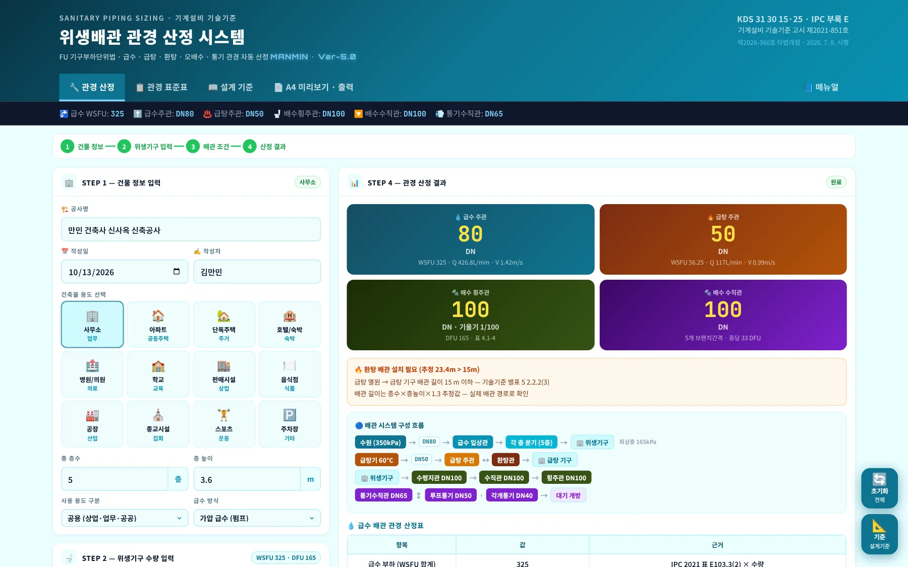
123456- 1작업 탭: 관경 산정 · 관경 표준표 · 설계 기준 · A4 미리보기 · 매뉴얼
- 2요약 스트립: 급수 WSFU · 급수주관 · 급탕주관 · 배수횡주관 · 배수수직관 · 통기수직관
- 3진행 단계: 건물 정보 → 위생기구 입력 → 배관 조건 → 산정 결과
- 4STEP 1 건물 정보
- 5결과 — 급수 · 급탕 · 배수 횡주관 · 수직관
- 6오른쪽 버튼: 초기화 · 설계기준 안내
| 영역 | 내용 |
|---|---|
| 왼쪽 — 입력 | STEP 1 건물 정보 → STEP 2 위생기구 수량 → STEP 3 배관 조건. 값을 바꾸면 바로 다시 계산합니다(계산 버튼 없음) |
| 오른쪽 — 결과 | 주관 4종(큰 숫자) → 판정 배너 → 배관 구성 흐름 → 급수 · 급탕 · 오배수 · 통기 산정표 → 핵심 수치 요약 |
| 요약 스트립 | 헤더 아래 띠에 핵심 결과 6개가 늘 보입니다. 다른 탭에서도 확인할 수 있습니다 |
1-2. 작업 탭·근거 표시
- 1관경 산정
- 2관경 표준표 — IPC 표 E103.3(3) · KDS 표 4.1-4 · 4.1-5 · 기구별 부하단위
- 3설계 기준 — 급수 · 급탕 · 오배수 · 통기 요약 · 배관 지지 간격
- 4A4 미리보기 · 출력 — 결과서 · 인쇄 · JPG
- 5매뉴얼 — 이 문서(새 창)
- 6근거 기준 — KDS 31 30 15 · 25 · IPC 부록 E · 기술기준
1-3. 설치·보관·매뉴얼
| 항목 | 내용 |
|---|---|
| 설치 | 주소창의 설치 아이콘 또는 휴대폰 「홈 화면에 추가」로 앱처럼 쓸 수 있습니다. 한 번 연 뒤에는 인터넷 없이도 계산됩니다 |
| 입력값 보관 | 입력값은 저장되지 않습니다. 결과는 A4 결과서(PDF · JPG)로 남기십시오 |
| 매뉴얼 | 탭 막대 오른쪽 끝 「📘 매뉴얼」 — 인터넷 연결 시 새 창으로 열립니다 |
| 업데이트 | 새 버전이 올라오면 다음 접속 때 자동으로 바뀝니다. 화면이 예전 그대로면 새로 고침(Ctrl+F5) |
021분 따라하기
예제 A로 6단계를 따라 하면 급수 주관 DN 80 · 급탕 주관 DN 50 · 배수수직관 DN 100가 나옵니다.
- ① 건물 정보STEP 1에서 건축물 용도 「사무소」를 누르고 총 층수 5, 층 높이 3.6 m, 급수 방식 「가압 급수(펌프)」를 고릅니다. 사용 용도 구분은 「공용」으로 자동 설정됩니다(3-1).
- ② 위생기구 수량STEP 2 「화장실」 탭에서 양변기(세정밸브) 20 · 소변기 10 · 세면기 급수 20 · 급탕 20을, 「기타」 · 「주방」 탭에서 청소싱크 5 · 5와 싱크대(주방) 5 · 5를 넣습니다(3-2).
- ③ 배관 조건STEP 3에서 급수원 압력 350 kPa를 넣고, 관재질 · 설계 유속 상한 1.5 m/s · 급탕 60°C는 기본값으로 둡니다(3-3).
- ④ 관경 결과오른쪽 큰 숫자로 급수 DN 80 · 급탕 DN 50 · 배수 횡주관 DN 100 · 배수 수직관 DN 100을 확인하고, 아래 산정표에서 근거를 봅니다(3-4 ~ 3-7).
- ⑤ 근거표 대조「📋 관경 표준표」에서 IPC 표 E103.3(3)의 유량과 KDS 표 4.1-5 · 4.1-4의 허용 DFU를 대조합니다(3-9).
- ⑥ A4 결과서「📄 A4 미리보기 · 출력」에서 「🖨️ 인쇄 / PDF」 또는 「🖼️ JPG 저장」으로 결과서를 남깁니다(3-12).
| 항목 | 예제 A 결과 |
|---|---|
| 건물 · 층수 | 사무소 · 5층 × 3.6 m · 급수원 350 kPa(가압) |
| 급수 부하 → 유량 | 325 WSFU · 세정밸브 주체 곡선 → 112.75 gpm = 426.8 L/min |
| 급수 주관 | DN 80 — 실유속 1.42 m/s (상한 1.5 m/s) |
| 급탕 부하 → 유량 | 56.25 WSFU · 세정탱크 주체 → 117 L/min |
| 급탕 주관 | DN 50 — 실유속 0.99 m/s |
| 최상층 잔류압 | 350 − 177 − 7.9(추정) = 165 kPa ≥ 필요 100 kPa(양변기(세정밸브)) ✅ |
| 배수 부하 | 165 DFU (일반 건물 열) · 층당 33 DFU |
| 배수수평지관 · 수직관 | DN 100 · DN 100 (5개 브랜치간격) |
| 건물배수수평주관 | DN 100 — 최소 기울기 1/100 |
| 통기관 | 통기수직관 DN 65 · 루프 DN 50 · 각개 DN 40 |
03화면별 기능 상세
3-1. 건물 정보 (STEP 1)
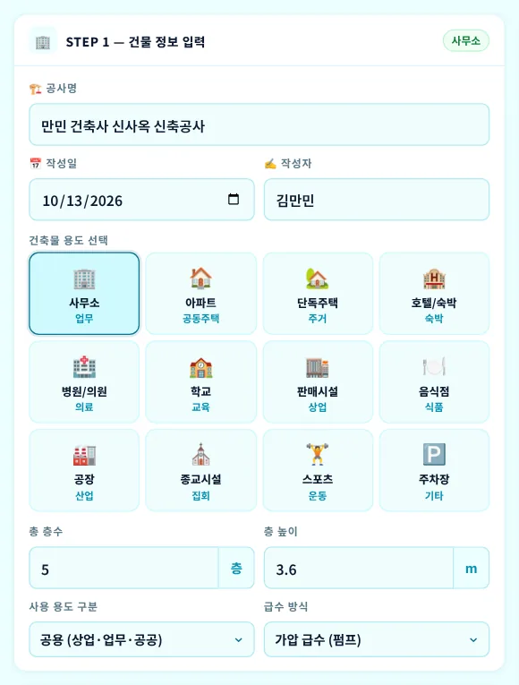
123456- 1공사명 · 작성일 · 작성자 — A4 결과서 표제
- 2건축물 용도 12종
- 3총 층수 — 배수수직관 브랜치간격 수
- 4층 높이 — 정수두 · 배관 길이 추정
- 5사용 용도 구분 — 급수 WSFU 주거 / 공용
- 6급수 방식 — 감압밸브 판정
| 항목 | 내용 |
|---|---|
| 건축물 용도 | 배수 DFU 열(KDS 25 표 4.1-2)을 정합니다 — 사무소 · 판매 · 공장 · 음식점 · 주차장 = 일반 건물 / 호텔 · 병원 · 학교 · 종교 · 스포츠 = 다중 이용시설 / 아파트 = 3호 이상 공동주택 / 단독주택 |
| 사용 용도 구분 | 급수 WSFU의 주거(Private) · 공용(Public) 열(IPC 표 E103.3(2))을 정합니다. 용도를 누르면 자동으로 바뀌며 따로 고칠 수 있습니다 |
| 총 층수 | 기구가 층마다 고르게 달린다고 보고, 층수를 배수수직관의 브랜치간격 수로 씁니다(4-8) |
| 층 높이 | 정수두(층수 × 층 높이 × 9.81 kPa/m)와 배관 길이 추정(× 1.5 · × 1.3)에 씁니다 |
| 급수 방식 | 가압 · 직결은 공급압을, 고가탱크는 건물 높이 정수두를 최하층 압력으로 보고 550 kPa 감압 판정을 합니다(4-5) |
3-2. 위생기구 수량 (STEP 2)
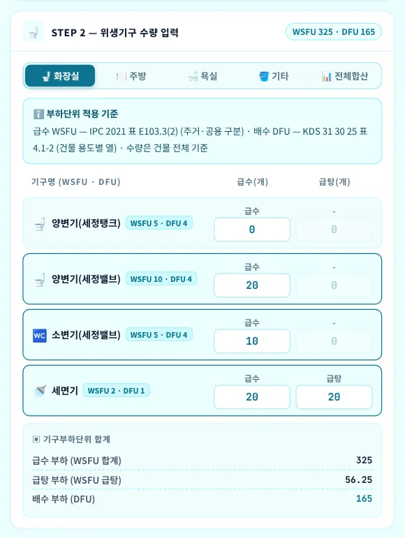
12345- 1기구 분류 탭 — 화장실 · 주방 · 욕실 · 기타 · 전체합산
- 2기구별 WSFU · DFU(현재 용도 기준)
- 3급수 수량(개)
- 4급탕 수량(개)
- 5부하단위 합계 — 급수 · 급탕 WSFU · 배수 DFU
| 항목 | 내용 |
|---|---|
| 수량 | 건물 전체 개수를 넣습니다. 급수 칸은 냉수(급수 주관)에, 급탕 칸은 온수(급탕 주관)에 들어갑니다. 급탕이 없는 기구(양변기 · 소변기 · 음수대 등)는 급탕 칸이 꺼져 있습니다 |
| 배수 수량 | 급수 · 급탕 수량 가운데 큰 값을 배수 수량으로 씁니다 |
| 기구 배지 | WSFU(급수 합계 열)와 DFU(배수)를 보여 줍니다. 건물 용도 · 사용 구분을 바꾸면 값이 바뀝니다 |
| 전체합산 탭 | 입력한 기구를 분류별로 모아 보고 급수 · 급탕 · 배수 합계를 확인합니다 |
3-3. 배관 조건 (STEP 3)
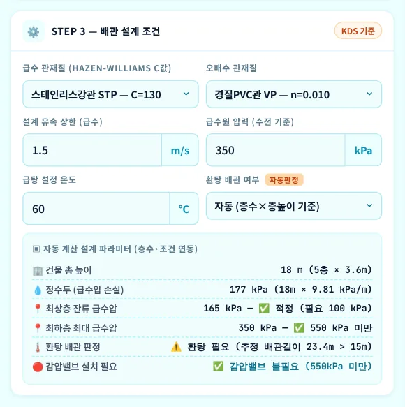
123456- 1급수 관재질 — Hazen-Williams C
- 2설계 유속 상한(급수)
- 3급수원 압력(수전 기준)
- 4급탕 설정 온도
- 5환탕 배관 — 자동 · 강제
- 6자동 계산 파라미터 — 높이 · 정수두 · 최상층 · 최하층 · 환탕 · 감압
| 항목 | 내용 |
|---|---|
| 관재질 · C값 | 강관 100 · 스테인리스 · 동관 130 · PPR · XL-PE 150 — 마찰손실 추정에만 씁니다 |
| 설계 유속 상한 | 기술기준 · KDS에는 수치 한계가 없어 설계자가 정합니다(기본 1.5 m/s). 낮출수록 관경이 커집니다 |
| 급수원 압력 | 가압 · 직결 방식에서 최하층 기구 기준 압력(kPa). 최상층 잔류압과 감압 판정에 씁니다 |
| 급탕 설정 온도 | 60℃를 넘기면 A4 검토 의견에 「온도조절밸브로 60℃ 이하 제한」이 붙습니다(별표 5 2.2.3) |
| 오배수 관재질 | A4 결과서 표기용입니다. 배수 관경 선정에는 영향이 없습니다 |
3-4. 산정 결과
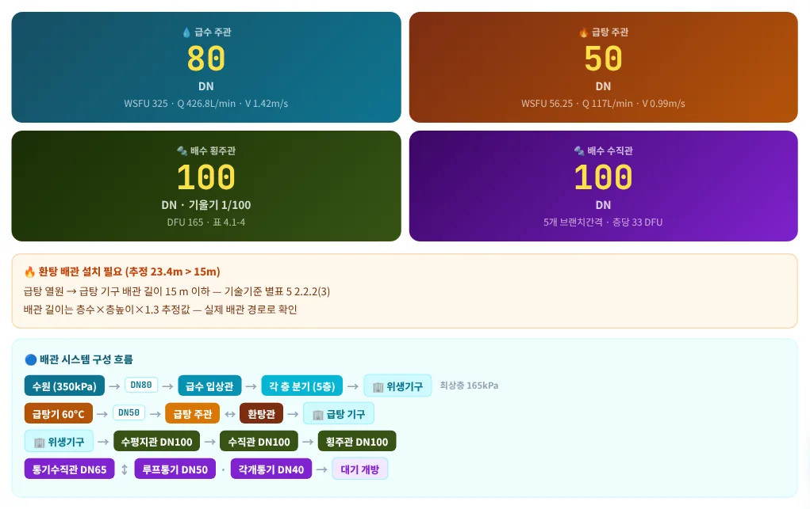
123456- 1급수 주관 DN · WSFU · 유량 · 실유속
- 2급탕 주관 DN
- 3배수 횡주관(건물배수수평주관) DN · 최소 기울기
- 4배수 수직관 DN · 브랜치간격 · 층당 DFU
- 5판정 배너 — 수압 부족 · 감압밸브 · 환탕
- 6배관 구성 흐름 — 수평지관 · 수직관 · 횡주관 · 통기
판정 배너는 해당할 때만 나타납니다 — 🔴 최상층 급수압 부족 · 🔴 감압밸브 설치 필요 · 🔥 환탕 배관 설치 필요 · ⚠️ 급수 부하 5,000 WSFU 초과 · 🔴 배수 부하가 KDS 표 범위 초과.
3-5. 급수·급탕 산정표
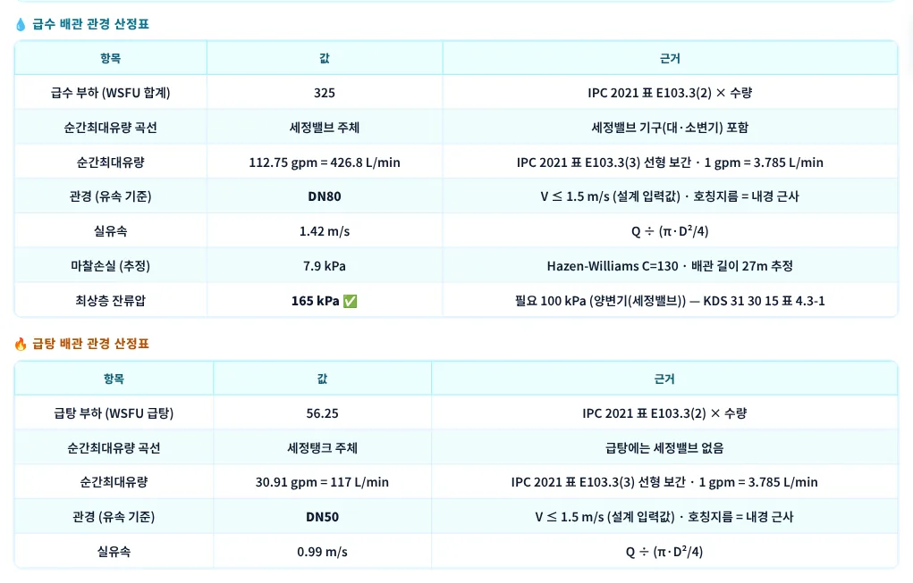
12345- 1순간최대유량 곡선 — 세정탱크 / 세정밸브
- 2순간최대유량(gpm · L/min)
- 3관경 — 유속 기준
- 4최상층 잔류압 · 필요 수압
- 5급탕 산정표
표는 「항목 · 값 · 근거」 세 칸으로 계산 과정을 그대로 보여 줍니다. 예제 A는 세정밸브 기구(대 · 소변기)가 있어 세정밸브 곡선을 씁니다.
3-6. 오배수 산정표
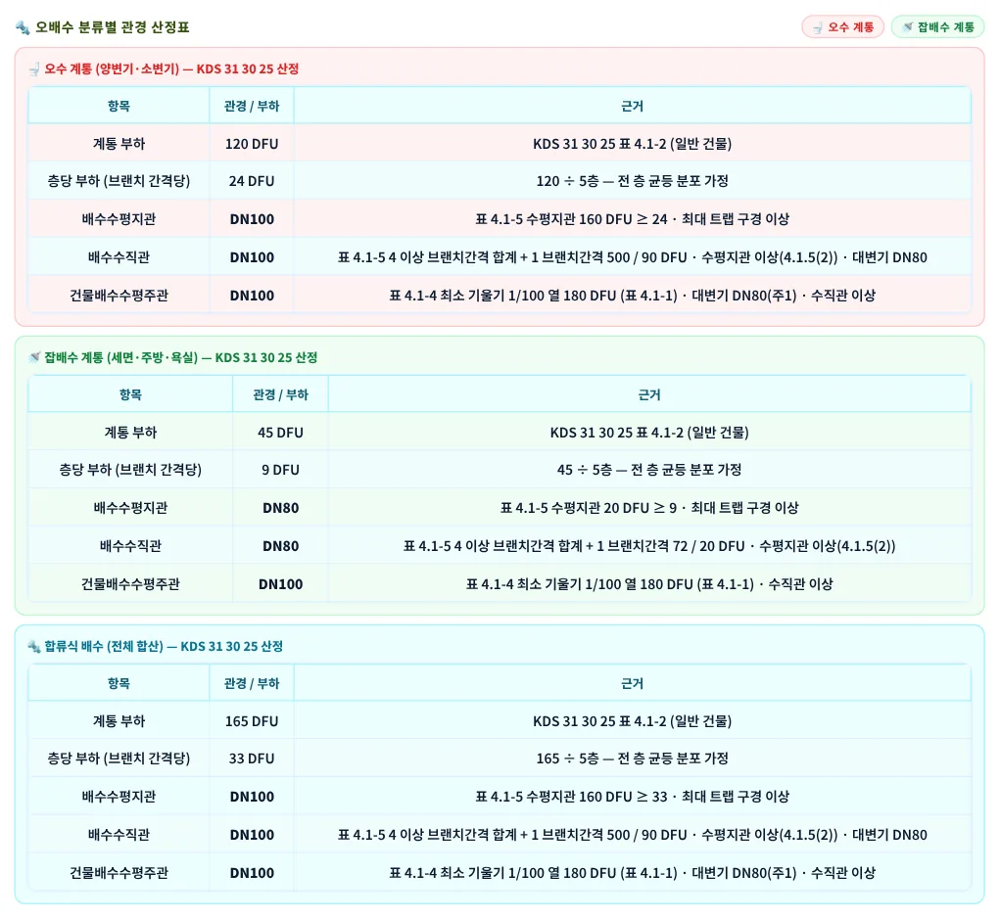
12345- 1오수 계통(대 · 소변기)
- 2잡배수 계통(세면 · 주방 · 욕실 · 기타)
- 3배수수평지관 — 표 4.1-5
- 4배수수직관 — 표 4.1-5
- 5건물배수수평주관 — 표 4.1-4
오수 · 잡배수를 따로 배관할 때와 합쳐 배관할 때(합류식)를 모두 보여 줍니다. 각 행의 「근거」 칸에 쓴 표 · 허용 DFU · 하한 조건(트랩 구경 · 대변기 DN 80 · 흐름 방향 축소 금지)이 그대로 나옵니다.
3-7. 통기 산정표
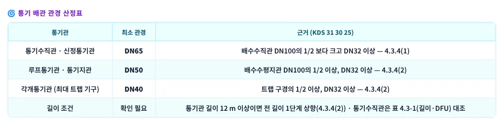
1234- 1통기수직관 · 신정통기관
- 2루프통기관 · 통기지관
- 3각개통기관(최대 트랩 기구)
- 4길이 조건 — 확인 필요
3-8. 핵심 수치·적용 기준
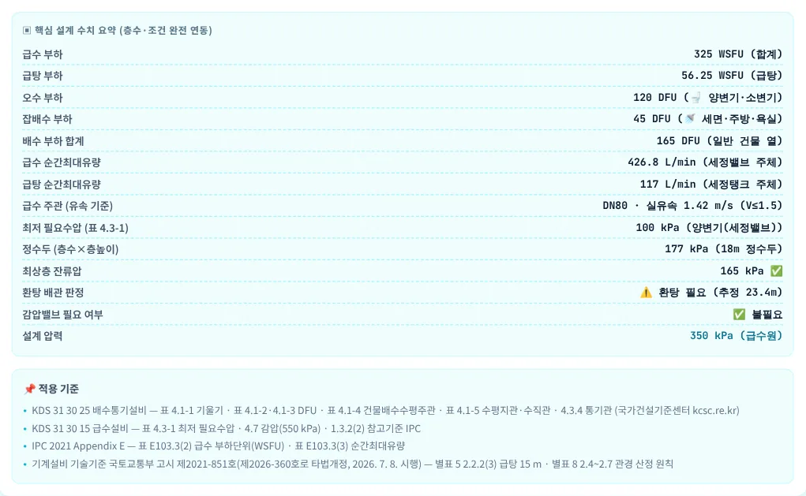
12345- 1부하단위 — 급수 · 급탕 WSFU · 오수 · 잡배수 · 합계 DFU
- 2순간최대유량
- 3최저 필요수압(표 4.3-1)
- 4최상층 잔류압
- 5적용 기준 4줄
3-9. 관경 표준표 탭
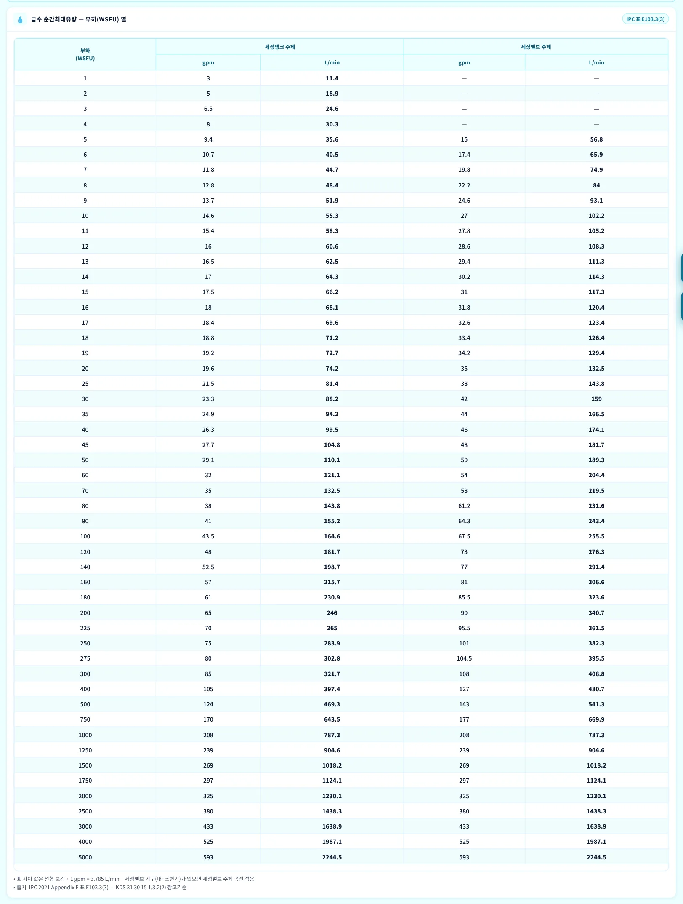
12- 1WSFU 100 — 탱크 43.5 · 밸브 67.5 gpm
- 2WSFU 300 — 탱크 85 · 밸브 108 gpm
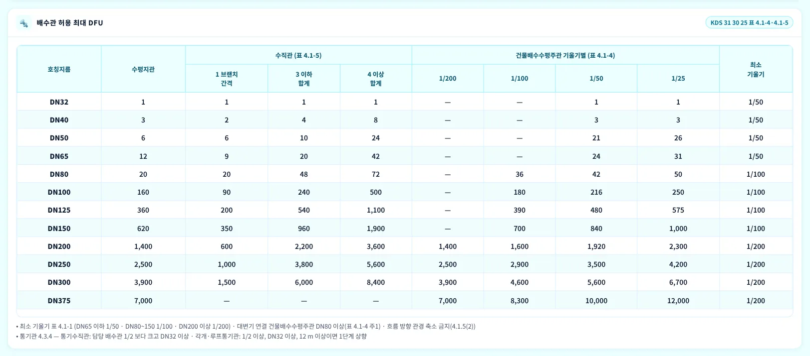
12- 1DN 100
- 2DN 80 — 최소 기울기 1/100
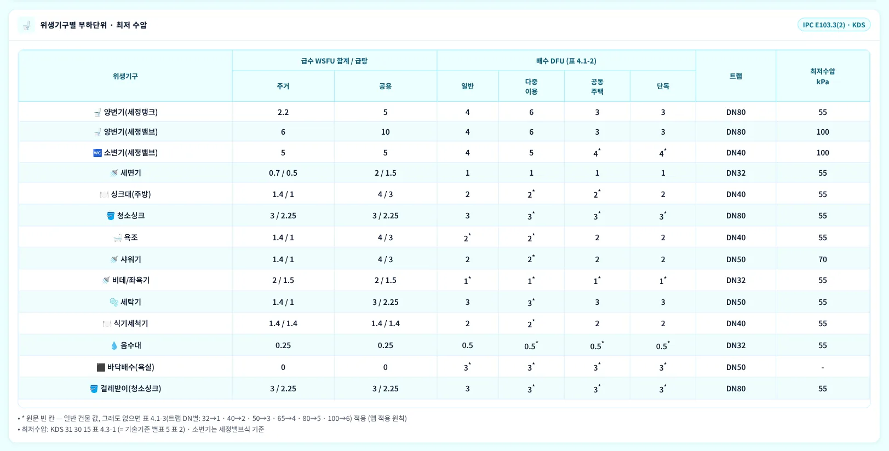
12- 1세정밸브 양변기 — 주거 6 · 공용 10 WSFU
- 2원문 빈 칸 → 표 4.1-3(*)
세 표는 근거 원문 수치를 그대로 옮긴 것입니다. 계산은 이 표만 씁니다.
3-10. 설계 기준 탭
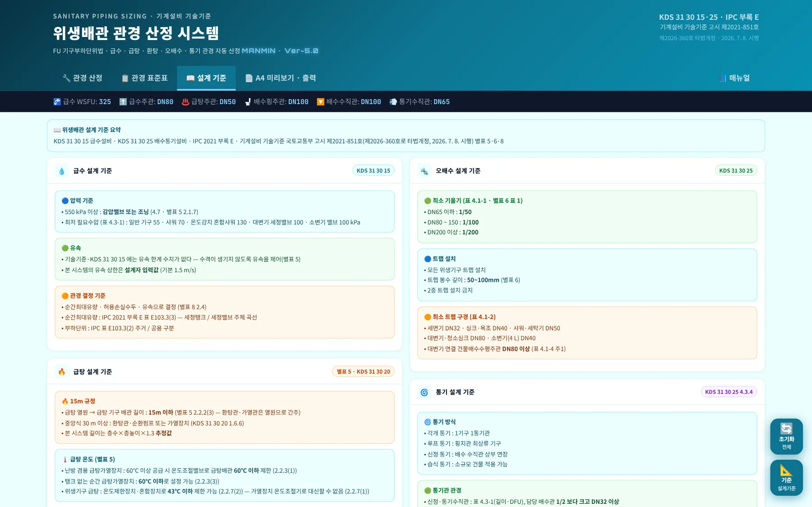
1234- 1급수 — KDS 31 30 15 압력 · 유속 · 관경 결정
- 2급탕 — 별표 5 15 m · 60℃ · 43℃
- 3오배수 — KDS 25 최소 기울기 · 트랩 · 최소 트랩 구경
- 4통기 — KDS 25 4.3.4
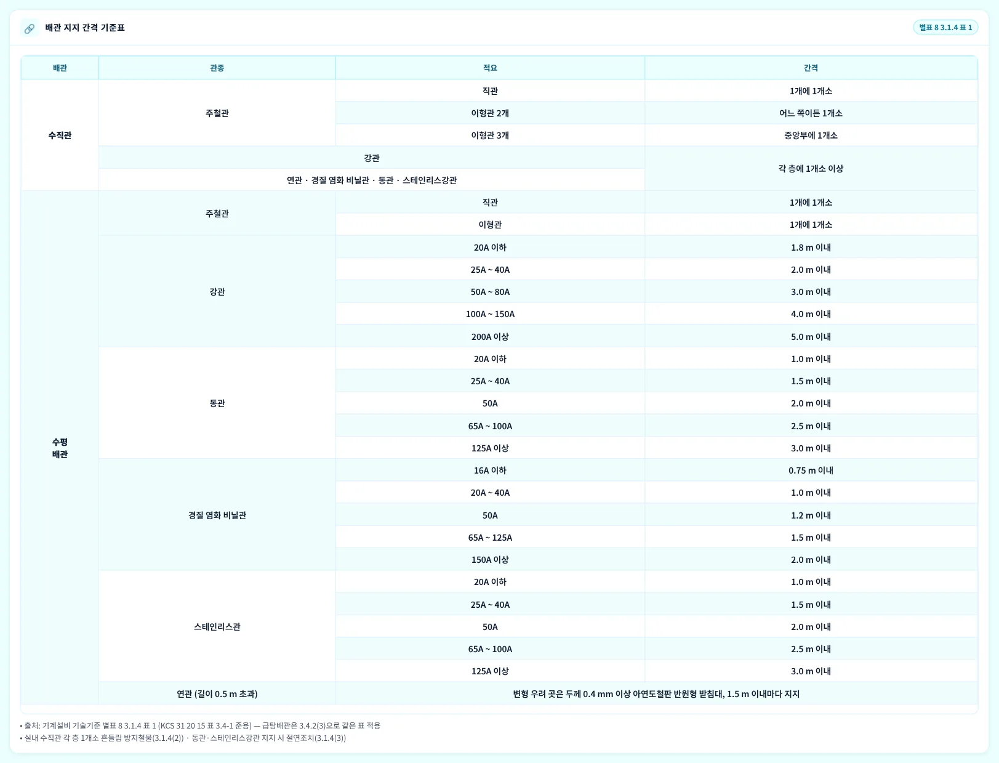
3-11. 설계기준 안내 창
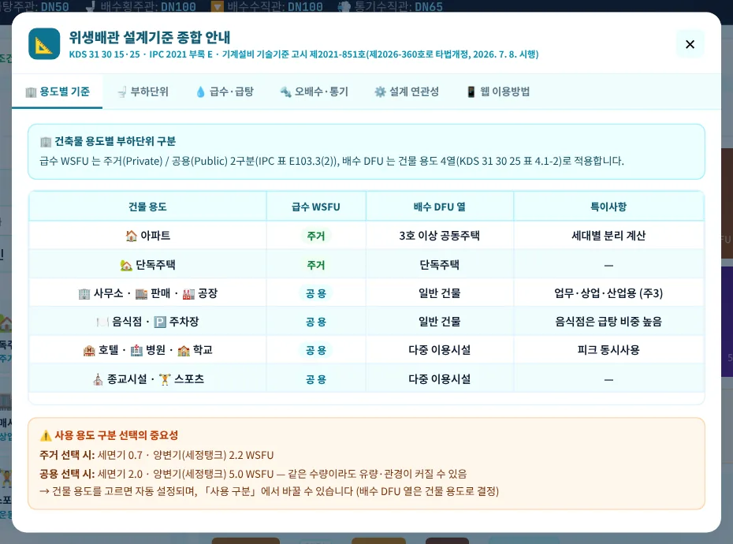
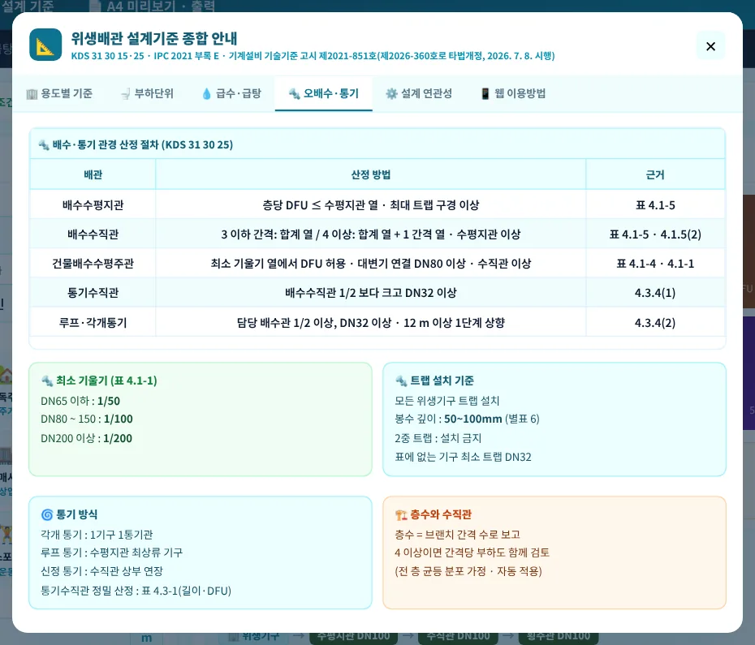
안내 창은 용도별 기준 · 부하단위 · 급수 · 급탕 · 오배수 · 통기 · 설계 연관성 · 웹 이용방법 6개 탭으로 되어 있습니다.
3-12. A4 결과서·출력
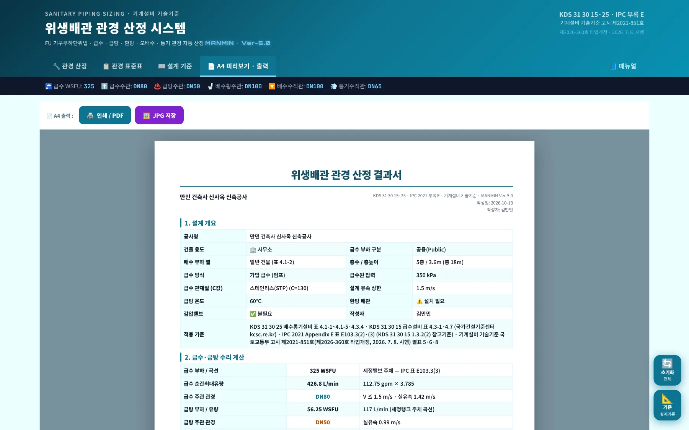
123- 1인쇄 / PDF — 인쇄 창 대상을 「PDF로 저장」으로
- 2JPG 저장 — A4 쪽 단위 그림
- 3A4 산정 결과서
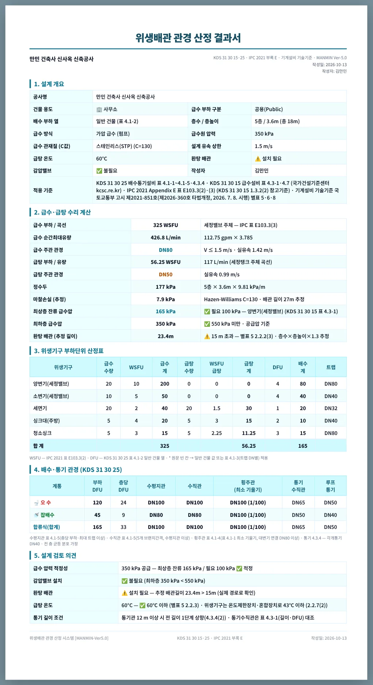
12345- 11. 설계 개요 — 적용 기준 포함
- 22. 급수 · 급탕 수리 계산
- 33. 위생기구 부하단위 산정표
- 44. 배수 · 통기 관경
- 55. 설계 검토 의견
3-13. 모바일
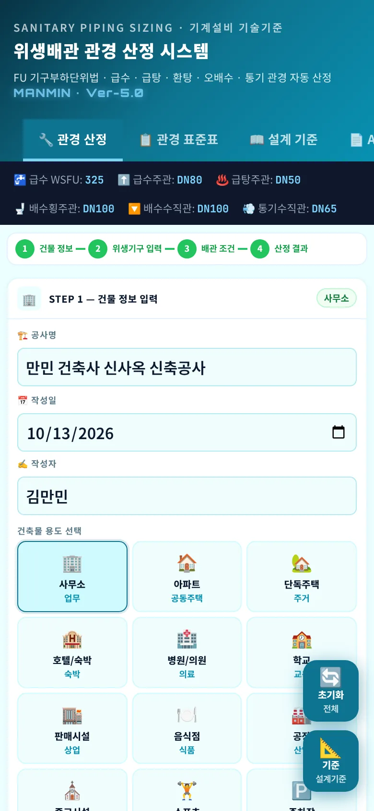
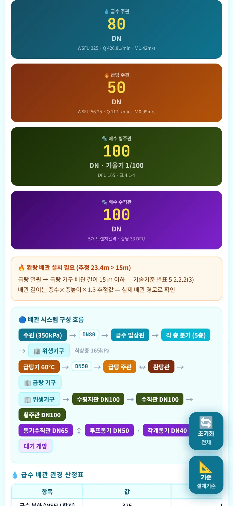
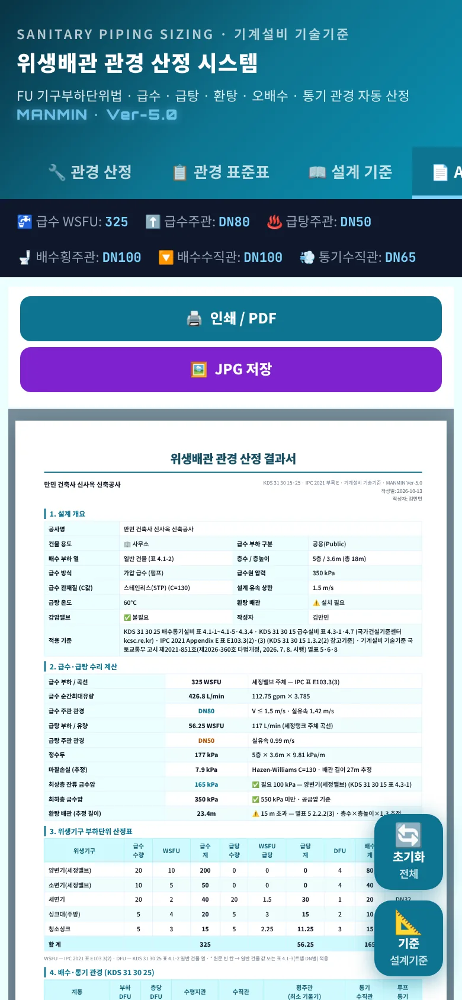
휴대폰에서는 입력 → 결과가 한 줄로 이어집니다. 탭 막대는 좌우로 밀어 「📘 매뉴얼」까지 볼 수 있습니다.
04기술기준 해설
4-1. 근거 체계
| 구분 | 내용 |
|---|---|
| 기계설비 기술기준 | 기계설비 기술기준 국토교통부 고시 제2021-851호(제2026-360호로 타법개정, 2026. 7. 8. 시행) — 별표 5(급수 · 급탕) · 별표 6(오배수 · 통기) · 별표 8(배관). 별표 8 2.4 ~ 2.7은 「순간최대유량 · 허용손실수두 · 유속」 「최대 기구배수부하단위수」 「배관길이와 총 기구배수부하단위」로 관경을 정한다는 원칙만 두고, 부하단위표는 없습니다 |
| 설계기준(KDS) | KDS 31 30 25 배수통기설비 · KDS 31 30 15 급수설비 · KDS 31 30 20 급탕설비 — 「설비(기계) 설계기준(KDS 31 00 00)…」 국토교통부고시 제2026-92호(2026. 3. 1. 시행, 현행) 첨부. 발간처 국가건설기준센터(kcsc.re.kr) |
| 참고기준 | KDS 31 30 15 1.3.2(2)가 참고기준으로 든 IPC(International Plumbing Code) — IPC 2021 부록 E 표 E103.3(2) 부하단위 · 표 E103.3(3) 순간최대유량. KDS에는 급수부하단위표와 유량 곡선이 없습니다 |
| 원문 대조 | KDS hwp 원문에서 표 4.1-1 ~ 4.1-5 · 4.3-1 · KDS 31 30 15 표 4.3-1을 추출해 앱 표와 셀 단위로 대조(2026-10-13) |
4-2. 급수 부하단위 — IPC 표 E103.3(2)
기구마다 정한 급수 부하단위(WSFU)를 수량에 곱해 더합니다. 표에는 냉수 · 급탕 · 합계 세 열이 있고 주거(Private) · 공용(Public)이 다릅니다. 프로그램은 급수 주관에 합계 열, 급탕 주관에 급탕 열을 씁니다(한 기구에 냉 · 온수를 함께 줄 때 냉수 · 급탕 값은 합계의 3/4 — 표 주 a).
| 위생기구 | 주거 WSFU | 공용 WSFU | DFU 일반·다중·공동·단독 | 트랩 | 최저수압 |
|---|---|---|---|---|---|
| 양변기(세정탱크) | 2.2 | 5 | 4 · 6 · 3 · 3 | DN 80 | 55 |
| 양변기(세정밸브) | 6 | 10 | 4 · 6 · 3 · 3 | DN 80 | 100 |
| 소변기(세정밸브) | 5 | 5 | 4 · 5 · 4* · 4* | DN 40 | 100 |
| 세면기 | 0.7 / 0.5 | 2 / 1.5 | 1 · 1 · 1 · 1 | DN 32 | 55 |
| 싱크대(주방) | 1.4 / 1 | 4 / 3 | 2 · 2* · 2* · 2 | DN 40 | 55 |
| 청소싱크 | 3 / 2.25 | 3 / 2.25 | 3 · 3* · 3* · 3* | DN 80 | 55 |
| 욕조 | 1.4 / 1 | 4 / 3 | 2* · 2* · 2 · 2 | DN 40 | 55 |
| 샤워기 | 1.4 / 1 | 4 / 3 | 2 · 2* · 2 · 2 | DN 50 | 70 |
| 비데/좌욕기 | 2 / 1.5 | 2 / 1.5 | 1* · 1* · 1* · 1* | DN 32 | 55 |
| 세탁기 | 1.4 / 1 | 3 / 2.25 | 3 · 3* · 3 · 3 | DN 50 | 55 |
| 식기세척기 | 1.4 / 1.4 | 1.4 / 1.4 | 2 · 2* · 2 · 2 | DN 40 | 55 |
| 음수대 | 0.25 | 0.25 | 0.5 · 0.5* · 0.5* · 0.5* | DN 32 | 55 |
| 바닥배수(욕실) | 0 | 0 | 3* · 3* · 3* · 3* | DN 50 | — |
| 걸레받이(청소싱크) | 3 / 2.25 | 3 / 2.25 | 3 · 3* · 3* · 3* | DN 80 | 55 |
WSFU는 「합계 / 급탕」, 최저수압 단위 kPa. * 원문 빈 칸 — 일반 건물 값, 없으면 표 4.1-3(트랩 DN별) 적용(4-7). 최저수압은 KDS 31 30 15 표 4.3-1.
4-3. 순간최대유량 — IPC 표 E103.3(3)
부하단위 합계를 동시사용을 고려한 순간최대유량으로 바꾸는 표(Hunter 곡선 계열)입니다. 세정밸브(플러시밸브) 기구는 짧은 시간에 큰 유량을 쓰므로 같은 부하에서 유량이 큽니다. 프로그램은 급수 수량이 있는 세정밸브 기구(대변기 세정밸브 · 소변기)가 하나라도 있으면 세정밸브 주체, 없으면 세정탱크 주체 곡선을 씁니다. 급탕은 늘 세정탱크 주체입니다.
| WSFU | 세정탱크 주체 gpm | 세정밸브 주체 gpm |
|---|---|---|
| 100 | 43.5 | 67.5 |
| 300 | 85 | 108 |
| 1,000 | 208 | 208 |
| 항목 | 내용 |
|---|---|
| 예제 A 급수 | 325 WSFU — 300(108.0)과 400(127.0) 사이 → 112.75 gpm × 3.785 = 426.8 L/min |
| 예제 A 급탕 | 56.25 WSFU — 세정탱크 주체 → 30.91 gpm × 3.785 = 117 L/min |
| 표 범위 | 세정밸브 열은 부하 5부터 있습니다(5 이하는 5의 값). 5,000 WSFU를 넘으면 마지막 구간 기울기로 외삽하고 경고합니다 |
4-4. 급수 관경·마찰손실
| 항목 | 내용 |
|---|---|
| 유속 상한 | 별표 5는 「수격이 발생하지 않도록 급수설비의 유속을 제어」하라고만 하고 수치를 두지 않습니다. KDS 31 30 15에도 유속 한계 수치가 없습니다 — 설계자가 정하는 입력값입니다 |
| 예제 A | Q 426.8 L/min · V ≤ 1.5 m/s → D = 77.7 mm → DN 80, 실유속 1.42 m/s |
| 마찰손실 | 배관 길이를 층수 × 층 높이 × 1.5로 추정한 값입니다 — 예제 A 7.9 kPa. 실제 길이 · 부속 손실은 실시설계에서 따로 계산하십시오 |
4-5. 수압 판정 — KDS 31 30 15 표 4.3-1 · 4.7
| 항목 | 내용 |
|---|---|
| 최저 필요수압 | 일반 기구 55 · 샤워기 70 · 압력식 · 온도감지 혼합밸브 샤워 130 · 대변기 세정밸브 100 · 소변기 밸브 100 · 대변기 세정탱크(밀결형) 55 kPa(표 4.3-1 = 별표 5 표 2) |
| 프로그램 판정 | 수량이 있는 기구 가운데 가장 큰 최저 필요수압과 비교합니다. 온도감지 혼합밸브 샤워(130 kPa)는 기구 목록에 없으므로 쓰는 경우 따로 확인하십시오 |
| 예제 A | 350 − 177 − 7.9 = 165 kPa ≥ 100 kPa(양변기(세정밸브)) ✅ |
| 감압밸브(4.7) | 위생기구 수압이 550 kPa 이상이면 감압밸브 또는 조닝(별표 5 2.1.7). 최하층 압력은 가압 · 직결 = 급수원 압력, 고가탱크 = 건물 높이 정수두(수조 설치 높이 미반영 — 추정)로 봅니다 |
4-6. 급탕·환탕
| 항목 | 내용 |
|---|---|
| 급탕 배관 길이 | 급탕 열원 → 급탕 위생기구 배관 길이 15 m 이하(별표 5 2.2.2(3) — 환탕관 · 가열관은 열원으로 간주). 중앙식 30 m 이상은 환탕관 · 순환펌프 또는 가열장치(KDS 31 30 20 1.6.6) |
| 프로그램 판정 | 배관 길이를 층수 × 층 높이 × 1.3으로 추정해 15 m와 비교합니다 — 예제 A 23.4 m. 실제 배관 경로로 확인하십시오 |
| 급탕 온도 | 난방 겸용 급탕가열장치는 온도조절밸브로 60℃ 이하 제한(2.2.3(1)) · 순간 급탕가열장치는 60℃ 이하 설정 가능(2.2.3(3)) · 위생기구 급탕은 온도제한장치 · 혼합장치로 43℃ 이하(2.2.7(2)) |
4-7. 배수 부하단위 — KDS 25 표 4.1-2 · 4.1-3
표 4.1-2는 같은 기구도 일반 건물 · 다중 이용시설 · 3호 이상 공동주택 · 단독주택에 따라 DFU가 다릅니다(예: 대변기 6 L/회 4 · 6 · 3 · 3). 프로그램은 건물 용도로 열을 고르고, 원문 빈 칸은 일반 건물 값을, 표에 없는 기구(비데 · 욕실 바닥배수)는 표 4.1-3 트랩 구경별 값(DN 32 → 1 · 40 → 2 · 50 → 3 · 65 → 4 · 80 → 5 · 100 → 6)을 씁니다.
4-8. 수평지관·수직관 — KDS 25 표 4.1-5
| 항목 | 내용 |
|---|---|
| 층당 부하 | 계통 DFU ÷ 층수 — 기구가 층마다 고르게 달린다는 가정 |
| 배수수평지관 | 「배수수평지관 합계」 열 ≥ 층당 부하 · 연결 기구 최대 트랩 구경 이상 |
| 배수수직관 | 층수(브랜치간격) 3 이하: 「3 이하 브랜치간격 합계」 열 ≥ 계통 DFU / 4 이상: 「4 이상 합계」 열 ≥ 계통 DFU 그리고 「1 브랜치간격 합계」 열 ≥ 층당 부하 · 수평지관 이상(흐름 방향 축소 금지 4.1.5(2)) · 대변기가 있으면 DN 80 이상 |
| 예제 A | 층당 33 DFU · 최대 트랩 DN 80 → 수평지관 DN 100(160) / 5층 → 수직관 DN 100(4 이상 500 · 1 간격 90) |
4-9. 건물배수수평주관 — 표 4.1-4 · 4.1-1
표 4.1-4는 같은 DN도 기울기가 클수록 많은 DFU를 받습니다. 프로그램은 표 4.1-1의 최소 기울기(DN 65 이하 1/50 · DN 80 ~ 150 1/100 · DN 200 이상 1/200) 열로 조회해 안전측으로 고르고, 대변기에 연결하면 DN 80 이상(표 4.1-4 주1), 수직관 이상으로 둡니다. 예제 A는 165 DFU → DN 100(1/100 열 180 DFU)입니다.
표 4.1-5 수평지관 · 수직관(최대 DFU)
| DN | 수평지관 | 수직관 1 간격 | 3 이하 합계 | 4 이상 합계 |
|---|---|---|---|---|
| DN 32 | 1 | 1 | 1 | 1 |
| DN 40 | 3 | 2 | 4 | 8 |
| DN 50 | 6 | 6 | 10 | 24 |
| DN 65 | 12 | 9 | 20 | 42 |
| DN 80 | 20 | 20 | 48 | 72 |
| DN 100 | 160 | 90 | 240 | 500 |
| DN 125 | 360 | 200 | 540 | 1,100 |
| DN 150 | 620 | 350 | 960 | 1,900 |
| DN 200 | 1,400 | 600 | 2,200 | 3,600 |
| DN 250 | 2,500 | 1,000 | 3,800 | 5,600 |
| DN 300 | 3,900 | 1,500 | 6,000 | 8,400 |
| DN 375 | 7,000 | — | — | — |
표 4.1-4 건물배수수평주관(최대 DFU)
| DN | 1/200 | 1/100 | 1/50 | 1/25 |
|---|---|---|---|---|
| DN 32 | — | — | 1 | 1 |
| DN 40 | — | — | 3 | 3 |
| DN 50 | — | — | 21 | 26 |
| DN 65 | — | — | 24 | 31 |
| DN 80 | — | 36 | 42 | 50 |
| DN 100 | — | 180 | 216 | 250 |
| DN 125 | — | 390 | 480 | 575 |
| DN 150 | — | 700 | 840 | 1,000 |
| DN 200 | 1,400 | 1,600 | 1,920 | 2,300 |
| DN 250 | 2,500 | 2,900 | 3,500 | 4,200 |
| DN 300 | 3,900 | 4,600 | 5,600 | 6,700 |
| DN 375 | 7,000 | 8,300 | 10,000 | 12,000 |
4-10. 통기관 — KDS 25 4.3.4
| 항목 | 내용 |
|---|---|
| 신정통기관 · 통기수직관(1) | 표 4.3-1(배관 길이 · 총 DFU)로 정하되, 어떠한 경우에도 담당 배수관의 1/2보다 크고 DN 32 이상 — 프로그램은 「1/2보다 크고 DN 32 이상」 하한을 계산합니다 |
| 각개 · 통기지관 · 루프 · 도피통기관(2) | 담당 배수관의 1/2 이상, 최소 DN 32. 통기관 길이 12 m 이상이면 전 길이를 1단계 큰 관경으로 |
| 예제 A | 통기수직관 DN 65(수직관 DN 100의 1/2 초과) · 루프 DN 50(수평지관의 1/2 이상) · 각개 DN 40(트랩 DN 80의 1/2 이상) |
| 표 4.3-1 | 통기관 길이(통기관 연결점 → 대기)에 따른 최대 거리 표 — 프로그램은 길이 입력이 없어 화면에 「확인 필요」로 안내합니다. 원문 복원본은 참고자료로 보관 |
4-11. 가정·다루지 않는 것
| 항목 | 내용 |
|---|---|
| 계통 가정 | 건물 전체 수량 · 수직관 1개 계통 · 층마다 고르게 분포. 수직관을 여러 개로 나누면 계통별로 따로 넣으십시오 |
| 배관 길이 | 마찰손실(× 1.5) · 환탕(× 1.3) 길이는 추정값. 실제 경로로 확인 |
| 고가탱크 방식 | 최상층 잔류압은 입력 급수원 압력 기준으로 계산합니다 — 고가탱크는 수조 설치 높이와 최상층 기구의 낙차로 따로 확인 |
| 다루지 않음 | 기구별 분기관 · 펌프 양정 · 저수조 용량 · 급탕 가열량 · 배수 펌프 · 우수(우수관경 산정 시스템 사용) |
4-12. v5.0.10~11 정정 내역
| 항목 | 기존 | 변경 |
|---|---|---|
| 급수 부하단위 | 출처 없는 FU | IPC 표 E103.3(2) WSFU(합계 · 급탕) |
| 순간최대유량 | Q = 0.6 · FU0.6(약 1/20 과소) | IPC 표 E103.3(3) 보간 · 탱크 / 밸브 곡선 |
| 급수 관경 | FU 관경표와 유속 관경 중 큰 값 | 유속 기준 · 실유속 표시 |
| 수압 판정 | 50 / 100 kPa 고정 | KDS 31 30 15 표 4.3-1 기구별 최저 필요수압 |
| 배수 DFU | 출처 없는 1열 | KDS 25 표 4.1-2 용도 4열 |
| 배수 관경 | FU 표 · 층수 +1 / +2단계 | 표 4.1-5 · 4.1-4 · 최소 기울기 · 대변기 DN 80 |
| 통기 | FU 표 | 4.3.4 — 1/2 · DN 32 |
| 표기 | 30A · 75A · 「일부개정」 · 별표 4 FU | DN · 「타법개정」 · 추정 표기 |
| 지지 간격 · 급탕 온도 · 감압(v5.0.11) | 원문과 다른 값 · 55℃ · 0.3 가산 | 별표 8 3.1.4 표 1 · 별표 5 2.2.3 · 2.2.7 · 급수방식별 550 kPa 이상 |
05실무 작업 방법
5-1. 단계별 절차
- 계통 나누기급수 조닝과 배수 수직관 계통을 먼저 정합니다. 계통마다 따로 넣는 것이 원칙입니다.
- 기구 수량 집계계통별 기구 수량을 세고 급탕을 쓰는 기구를 표시합니다. 세정밸브 기구 유무가 유량 곡선을 바꿉니다.
- 조건 입력건물 용도 · 층수 · 층 높이 · 급수원 압력 · 설계 유속을 넣습니다.
- 판정 확인수압 부족 · 감압 · 환탕 배너를 확인하고 필요하면 조닝 · 가압 계획을 바꿉니다.
- 도면 반영A4 결과서를 근거로 남기고 계통도에 DN을 적습니다. 흐름 방향으로 관경을 줄이지 않습니다(KDS 25 4.1.5(2)).
5-2. 도면 반영 전 확인
| 항목 | 확인 |
|---|---|
| 계통 | 수량이 한 계통 기준인가 · 수직관을 나눴다면 계통별로 다시 넣었나 |
| 수압 | 최상층 잔류압이 필요 수압 이상인가 · 최하층이 550 kPa 미만인가(이상이면 조닝 · 감압) |
| 통기 | 통기관 길이가 12 m 이상이면 1단계 상향 · 통기수직관은 표 4.3-1(길이 · DFU)로 확인 |
| 급탕 | 실제 급탕 배관 길이가 15 m를 넘으면 환탕 · 순환펌프 |
5-3. 예제 B — 공동주택 15층
아파트(3호 이상 공동주택) 15층 · 층 높이 2.9 m · 급수원 500 kPa에 세정탱크 양변기 60 · 세면기 60 · 욕조 30 · 샤워 30 · 주방싱크 30 · 세탁기 30 · 욕실 바닥배수 60을 넣은 경우입니다. 세정밸브 기구가 없어 세정탱크 곡선, 배수는 공동주택 열을 씁니다.
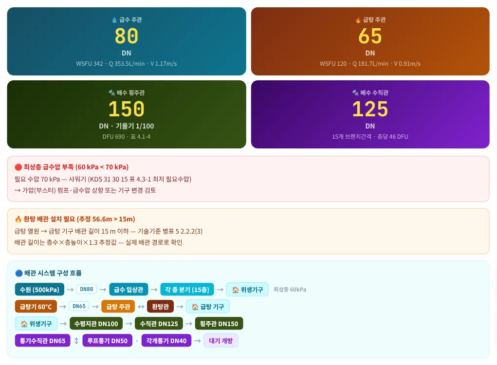
123- 1급수 주관 — 세정탱크 곡선
- 2배수 수직관
- 3최상층 급수압 부족
| 항목 | 예제 B 결과 |
|---|---|
| 건물 · 층수 | 아파트 · 15층 × 2.9 m · 급수원 500 kPa(가압) |
| 급수 부하 → 유량 | 342 WSFU · 세정탱크 주체 곡선 → 93.4 gpm = 353.5 L/min |
| 급수 주관 | DN 80 — 실유속 1.17 m/s (상한 1.5 m/s) |
| 급탕 부하 → 유량 | 120 WSFU · 세정탱크 주체 → 181.7 L/min |
| 급탕 주관 | DN 65 — 실유속 0.91 m/s |
| 최상층 잔류압 | 500 − 427 − 13.5(추정) = 60 kPa < 필요 70 kPa(샤워기) 🔴 |
| 배수 부하 | 690 DFU (3호 이상 공동주택 열) · 층당 46 DFU |
| 배수수평지관 · 수직관 | DN 100 · DN 125 (15개 브랜치간격) |
| 건물배수수평주관 | DN 150 — 최소 기울기 1/100 |
| 통기관 | 통기수직관 DN 65 · 루프 DN 50 · 각개 DN 40 |
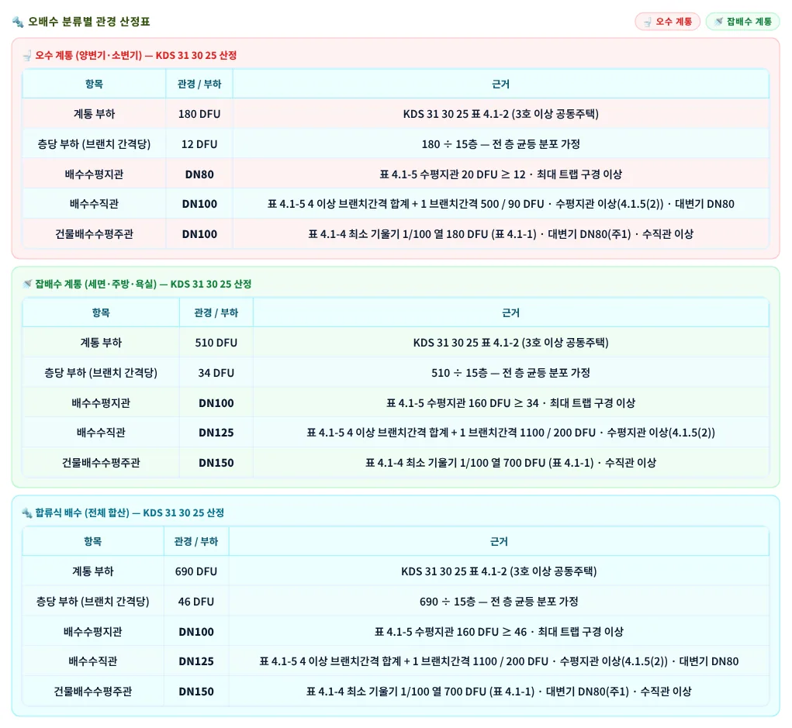
123- 1오수 계통
- 2잡배수 계통
- 3건물배수수평주관
06문제 해결·FAQ
| 증상·질문 | 답 |
|---|---|
| 결과가 나오지 않습니다 | 위생기구 수량을 하나 이상 넣어야 계산됩니다. |
| 예전 버전보다 급수 관경이 크게 나옵니다 | v5.0.10에서 유량식을 IPC 표로 바꿨기 때문입니다. 예전 식은 유량을 약 1/20로 냈습니다(4-12). |
| 같은 기구인데 배수 DFU가 용도마다 다릅니다 | KDS 25 표 4.1-2가 건물 용도별 4열이기 때문입니다(4-7). |
| 수직관이 횡주관보다 작게 나옵니다 | 표 4.1-5(수직관)와 표 4.1-4(1/100 기울기 횡주관)의 허용 DFU가 달라 생깁니다. 횡주관을 더 큰 기울기로 놓으면 줄일 수 있지만, 프로그램은 최소 기울기로 안전측 값을 냅니다. |
| 유속은 얼마로 두어야 하나요 | 기준 수치가 없습니다. 소음 · 수격을 고려해 설계자가 정합니다(기본 1.5 m/s). |
| 통기관 길이 입력이 없습니다 | 통기수직관의 길이별 표(4.3-1)는 화면에서 「확인 필요」로 안내합니다. 1/2 · DN 32 하한만 계산합니다. |
| JPG 저장이 되지 않습니다 | 「A4 미리보기 · 출력」 탭에서 눌러야 합니다. 그림 저장 라이브러리는 인터넷에서 내려받으므로, 오프라인에서 실패하면 인터넷에 연결해 한 번 연 뒤 다시 시도합니다. |
| 매뉴얼 버튼을 눌러도 열리지 않습니다 | 매뉴얼은 인터넷에 연결되어 있을 때만 열립니다. 휴대폰에서는 탭 막대를 왼쪽으로 밀면 버튼이 보입니다. |
A부록
A1. 예제 입력값
| 항목 | 예제 A | 예제 B |
|---|---|---|
| 건물 | 사무소(일반 건물 · 공용) 5층 × 3.6 m | 아파트(공동주택 · 주거) 15층 × 2.9 m |
| 급수 | 가압 350 kPa · STP C=130 · V ≤ 1.5 m/s | 가압 500 kPa · STP C=130 · V ≤ 1.5 m/s |
| 기구(급수/급탕) | 양변기(세정밸브) 20 · 소변기(세정밸브) 10 · 세면기 20/20 · 싱크대(주방) 5/5 · 청소싱크 5/5 | 양변기(세정탱크) 60 · 세면기 60/60 · 싱크대(주방) 30/30 · 욕조 30/30 · 샤워기 30/30 · 세탁기 30 · 바닥배수(욕실) 60 |
| 결과 | 급수 DN 80 · 급탕 DN 50 · 수직관 DN 100 · 횡주관 DN 100 | 급수 DN 80 · 급탕 DN 65 · 수직관 DN 125 · 횡주관 DN 150 |
예제 A 부하단위 산정
| 기구 | 급수 수량 × WSFU | 급탕 수량 × WSFU | 배수 수량 × DFU |
|---|---|---|---|
| 양변기(세정밸브) (트랩 DN 80) | 20 × 10 = 200 | — | 20 × 4 = 80 |
| 소변기(세정밸브) (트랩 DN 40) | 10 × 5 = 50 | — | 10 × 4 = 40 |
| 세면기 (트랩 DN 32) | 20 × 2 = 40 | 20 × 1.5 = 30 | 20 × 1 = 20 |
| 싱크대(주방) (트랩 DN 40) | 5 × 4 = 20 | 5 × 3 = 15 | 5 × 2 = 10 |
| 청소싱크 (트랩 DN 80) | 5 × 3 = 15 | 5 × 2.25 = 11.25 | 5 × 3 = 15 |
| 합계 | 325 WSFU | 56.25 WSFU | 165 DFU |
예제 B 부하단위 산정
| 기구 | 급수 수량 × WSFU | 급탕 수량 × WSFU | 배수 수량 × DFU |
|---|---|---|---|
| 양변기(세정탱크) (트랩 DN 80) | 60 × 2.2 = 132 | — | 60 × 3 = 180 |
| 세면기 (트랩 DN 32) | 60 × 0.7 = 42 | 60 × 0.5 = 30 | 60 × 1 = 60 |
| 싱크대(주방) (트랩 DN 40) | 30 × 1.4 = 42 | 30 × 1 = 30 | 30 × 2 = 60 |
| 욕조 (트랩 DN 40) | 30 × 1.4 = 42 | 30 × 1 = 30 | 30 × 2 = 60 |
| 샤워기 (트랩 DN 50) | 30 × 1.4 = 42 | 30 × 1 = 30 | 30 × 2 = 60 |
| 세탁기 (트랩 DN 50) | 30 × 1.4 = 42 | — | 30 × 3 = 90 |
| 바닥배수(욕실) (트랩 DN 50) | 60 × 0 = 0 | — | 60 × 3 = 180 |
| 합계 | 342 WSFU | 120 WSFU | 690 DFU |
A2. 순간최대유량 표 (IPC 표 E103.3(3))
| WSFU | 탱크 gpm | 탱크 L/min | 밸브 gpm | 밸브 L/min |
|---|---|---|---|---|
| 1 | 3 | 11.4 | — | — |
| 2 | 5 | 18.9 | — | — |
| 3 | 6.5 | 24.6 | — | — |
| 4 | 8 | 30.3 | — | — |
| 5 | 9.4 | 35.6 | 15 | 56.8 |
| 6 | 10.7 | 40.5 | 17.4 | 65.9 |
| 7 | 11.8 | 44.7 | 19.8 | 74.9 |
| 8 | 12.8 | 48.4 | 22.2 | 84 |
| 9 | 13.7 | 51.9 | 24.6 | 93.1 |
| 10 | 14.6 | 55.3 | 27 | 102.2 |
| 11 | 15.4 | 58.3 | 27.8 | 105.2 |
| 12 | 16 | 60.6 | 28.6 | 108.3 |
| 13 | 16.5 | 62.5 | 29.4 | 111.3 |
| 14 | 17 | 64.3 | 30.2 | 114.3 |
| 15 | 17.5 | 66.2 | 31 | 117.3 |
| 16 | 18 | 68.1 | 31.8 | 120.4 |
| 17 | 18.4 | 69.6 | 32.6 | 123.4 |
| 18 | 18.8 | 71.2 | 33.4 | 126.4 |
| 19 | 19.2 | 72.7 | 34.2 | 129.4 |
| 20 | 19.6 | 74.2 | 35 | 132.5 |
| 25 | 21.5 | 81.4 | 38 | 143.8 |
| 30 | 23.3 | 88.2 | 42 | 159 |
| 35 | 24.9 | 94.2 | 44 | 166.5 |
| 40 | 26.3 | 99.5 | 46 | 174.1 |
| 45 | 27.7 | 104.8 | 48 | 181.7 |
| 50 | 29.1 | 110.1 | 50 | 189.2 |
| 60 | 32 | 121.1 | 54 | 204.4 |
| 70 | 35 | 132.5 | 58 | 219.5 |
| 80 | 38 | 143.8 | 61.2 | 231.6 |
| 90 | 41 | 155.2 | 64.3 | 243.4 |
| 100 | 43.5 | 164.6 | 67.5 | 255.5 |
| 120 | 48 | 181.7 | 73 | 276.3 |
| 140 | 52.5 | 198.7 | 77 | 291.4 |
| 160 | 57 | 215.7 | 81 | 306.6 |
| 180 | 61 | 230.9 | 85.5 | 323.6 |
| 200 | 65 | 246 | 90 | 340.7 |
| 225 | 70 | 265 | 95.5 | 361.5 |
| 250 | 75 | 283.9 | 101 | 382.3 |
| 275 | 80 | 302.8 | 104.5 | 395.5 |
| 300 | 85 | 321.7 | 108 | 408.8 |
| 400 | 105 | 397.4 | 127 | 480.7 |
| 500 | 124 | 469.3 | 143 | 541.3 |
| 750 | 170 | 643.4 | 177 | 669.9 |
| 1,000 | 208 | 787.3 | 208 | 787.3 |
| 1,250 | 239 | 904.6 | 239 | 904.6 |
| 1,500 | 269 | 1,018.2 | 269 | 1,018.2 |
| 1,750 | 297 | 1,124.1 | 297 | 1,124.1 |
| 2,000 | 325 | 1,230.1 | 325 | 1,230.1 |
| 2,500 | 380 | 1,438.3 | 380 | 1,438.3 |
| 3,000 | 433 | 1,638.9 | 433 | 1,638.9 |
| 4,000 | 525 | 1,987.1 | 525 | 1,987.1 |
| 5,000 | 593 | 2,244.5 | 593 | 2,244.5 |
A3. 버전 변경 내역
| 버전 | 내용 |
|---|---|
| Ver-5.0 · v5.0.12 (2026-10-13) | 사용자 매뉴얼 연결(탭 막대 「📘 매뉴얼」) |
| Ver-5.0 · v5.0.11 (2026-10-13) | 배관 지지 간격표 원문화(별표 8 3.1.4 표 1) · 급탕 온도 문구(별표 5 2.2.3 · 2.2.7) · 감압밸브 급수방식별 550 kPa 이상 · 급탕 점도계수 삭제 |
| Ver-5.0 · v5.0.10 (2026-10-13) | 급수 IPC 부록 E · 수압 KDS 31 30 15 표 4.3-1 · 배수 · 통기 KDS 25 원문 표 · DN 표기 · 「타법개정」(4-12) |
| Ver-5.0 · v5.0.0 ~ v5.0.9 (2026-08 ~ 09) | 디자인 통일(헤더 · 탭 막대 · 요약 스트립), A4 미리보기 · JPG 저장, 오프라인 캐시 개선 |
A4. 용어
| 용어 | 뜻 |
|---|---|
| WSFU | 급수 부하단위(Water Supply Fixture Unit) — 기구별 동시사용 확률을 반영한 무차원 값 |
| 순간최대유량 | 여러 기구가 동시에 쓰일 때 예상되는 최대 유량 — 부하단위 합계로 구함 |
| 세정밸브 · 세정탱크 | 대변기 세정 방식. 세정밸브(플러시밸브)는 급수관에서 바로 큰 유량을 씀 |
| DFU | 기구배수부하단위(Drainage Fixture Unit) — KDS 25 표 4.1-2 |
| 브랜치간격 | 배수수직관에서 층마다 수평지관이 접속하는 간격(보통 한 층) |
| 건물배수수평주관 | 수직관 아래에서 건물 밖까지 이어지는 수평 배수주관 — 프로그램 화면의 「배수 횡주관」 |
| 신정통기관 · 통기수직관 | 배수수직관 상부를 연장한 통기관 · 배수수직관과 나란히 세운 통기관 |
| DN | 호칭지름(mm) |